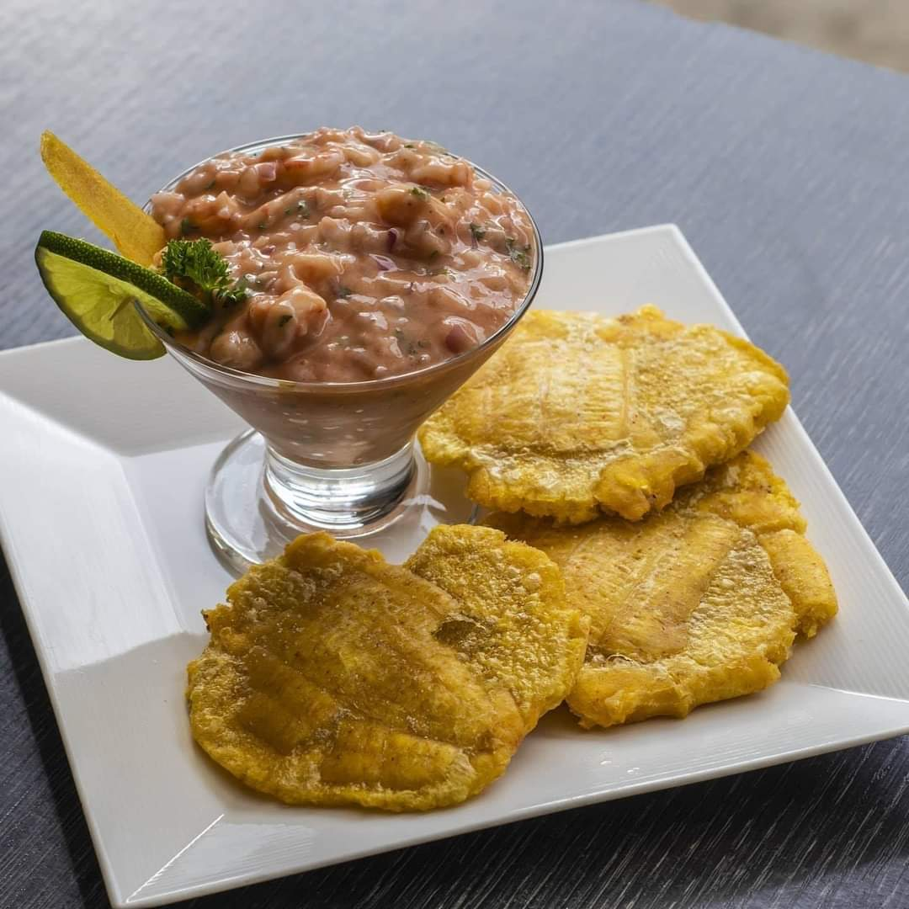
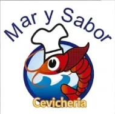
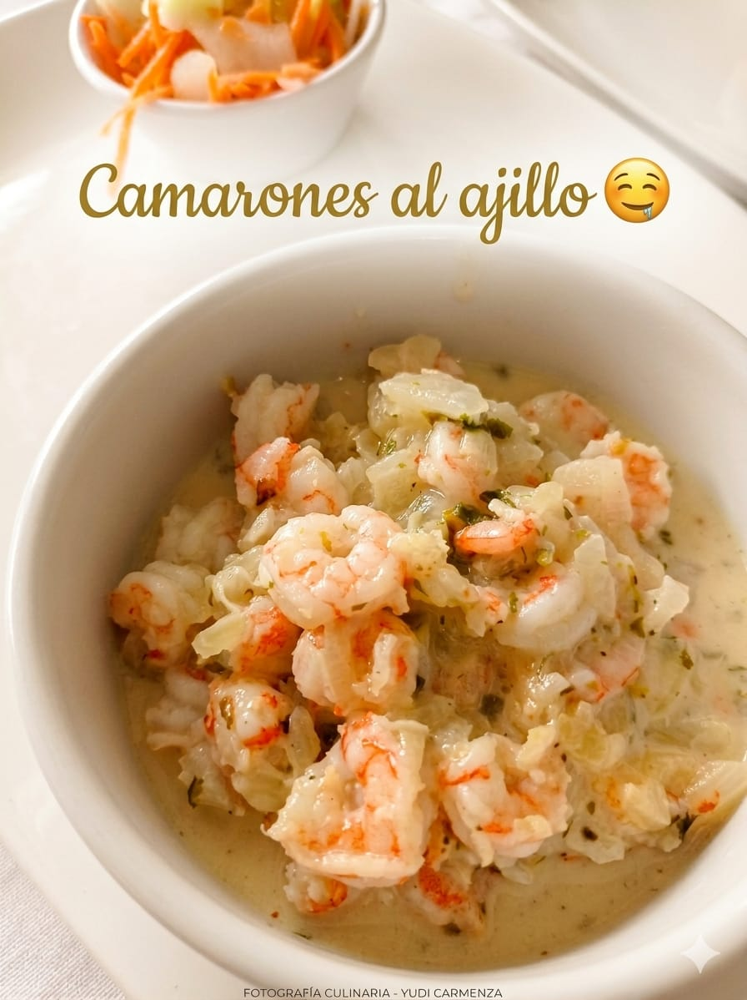

Ceviche de camarones
Tamaños junior, mediano y grande, según el hambre.
Desde $19.000 COP

Ceviches, mariscos y pescado fresco preparados en Quibdó, con servicio exclusivo a domicilio. Cada plato se hace al momento del pedido, no antes.
Mar y Sabor es un negocio familiar de comida de mar ubicado en Quibdó. Nació de la cocina de casa y hoy atiende pedidos todos los días de la semana, siempre preparados al momento para que lleguen frescos hasta la puerta.
Trabajamos con pescado, camarón, langostino y langosta según disponibilidad del día, además de arroces, sopas y un menú ejecutivo para quienes buscan algo más económico a la hora del almuerzo.
La carta se organiza por categorías para que sea fácil escoger: platos fuertes de pescado, mariscos al ajillo o encocados, sopas de mar, ceviches y cócteles, arroces y un menú ejecutivo del día.

Tamaños junior, mediano y grande, según el hambre.
Desde $19.000 COP

El más pedido entre semana, con arroz de coco de adición.
$35.000 COP

La combinación completa de la casa, con calamar y pulpo.
$38.000 COP
| Producto | Presentación | Precio |
|---|---|---|
| Coctel de camarones | Mediano | $24.000 COP |
| Coctel de langostinos | Única | $44.000 COP |
| Cazuela de mariscos | Personal | $48.000 COP |
| Parijuela de mariscos | Personal | $39.000 COP |
Escríbanos con sus datos y le confirmamos el pedido por WhatsApp o llamada. Recuerde que solo trabajamos con domicilio, no tenemos servicio para comer en el local.